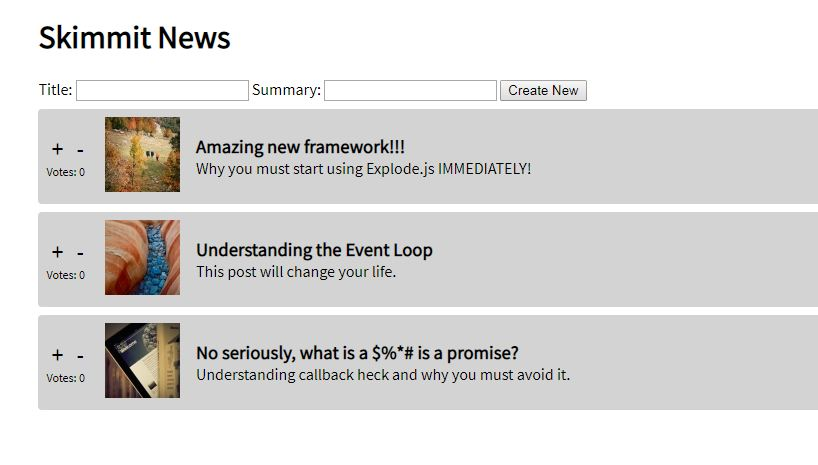
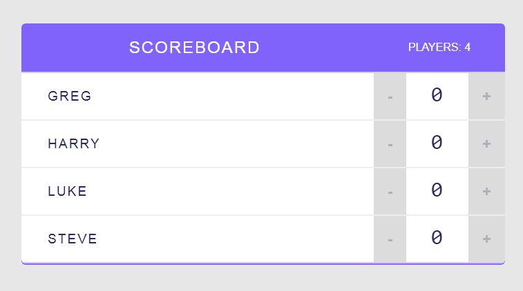

Background
I am a New Zealander who has been living away from home, Auckland, ever since I graduated in 2012 from the University of Auckland.
I have a Bachelor's degree in Commerce, with majors in Finance and Accounting.
After university, I moved to Sydney which I called home for the next six years, starting my career and loving living in the beautiful city.
In February, 2018 I embark on another adventure, to go teach English in Taipei, Taiwan.

In August, 2018 I touched down in London to call this new city my home.

Front End Development
I am a front end developer looking to make the complex simple. By using programming technology, I can create a site that takes a problem and presents a simple and easy time for a user.
Projects
Win this two player game by connecting four tokens diagonally, horizontally or vertically. Move the token using the left or right arrow keys and press down to drop! This game utilises JavaScript, HTML and CSS, and shows an understanding of core concepts of JavaScript.
This project was an effort to create a website where articles could be posted and voted on with the website updating dynamically. This website uses HTML, CSS and JavaScript as well as utilising Vue as a framework.

Using React as a framework, this project is a Scoreboard in which players can add and take away points to their names. Players can also be removed from the ScoreBoard.

Experience
Ted Baker
Customer Service Agent
London, UK
October 2018 - Present
- Answer inquiries for Ted Baker orders made via phone and email, including information regarding policies such as cancellation, returns and refunds.
- Investigate claims of orders not received and determine course of action, including potential fraudulent customers.
- Assist with placing orders and exchange items that are already ordered.
Overseas Travel
February 2018 - September 2018
Vocus Communication
Service Delivery Coordinator
Sydney, Australia
January, 2017 - February 2018
- Promoted to Senior in August, 2018 tasked with educating new hires among other tasks.
- Managed the organisation and delivery of telecommunications products such as internet, voice and cloud services. Components of delivery would be physical laying of cable on street level and in buildings, completion of signal and software configuration of service. Delivery would take several months, with an average of 60 services ongoing.
- Manage communication with client to update and manage expectations, with at least one formal email sent per week per service.
- Troubleshoot issues and take steps to resolve issue with new services.
- Organise different resources both internal and external, such as technicians, software engineers, government officials etc.
Overseas Travel
August 2016 - January 2017
Citibank Australia
Customer Service Officer
Sydney, Australia
June 2015 - August 2016
- Servicing high value Australian and multinational corporate clients for the corporate banking needs through phone, email and face-to-face.
- Answering any inquiries clients had, such as investigating payments with other banks to obtain more information or to verify transactions as legitimate.
- Assisting clients navigate the Citibank transactional banking platform, and troubleshooting any issues.

Citibank Australia
Collections Officer
Sydney, Australia
June 2013 - June 2015
First Data
Customer Service Officer
Sydney, Australia
September 2012 - June 2013
Email: gregory.b.mcdonald@gmail.com
Phone: 07554821707